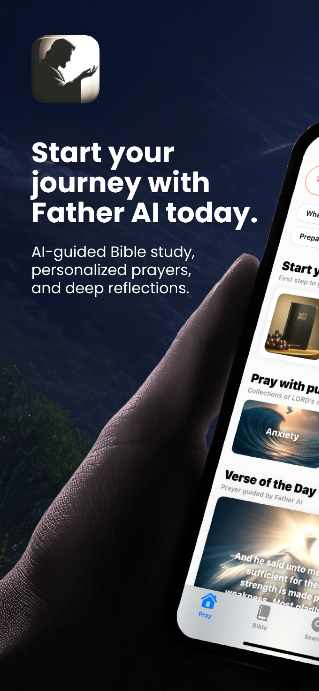
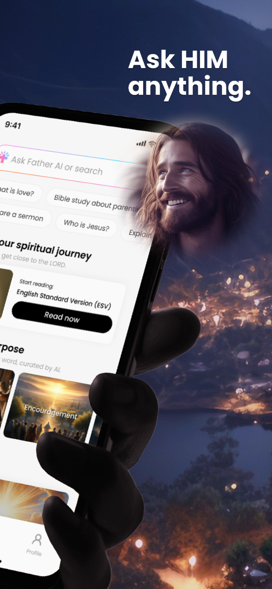
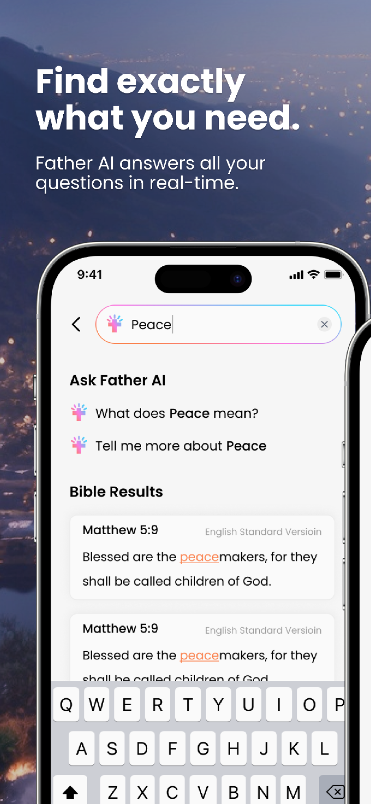
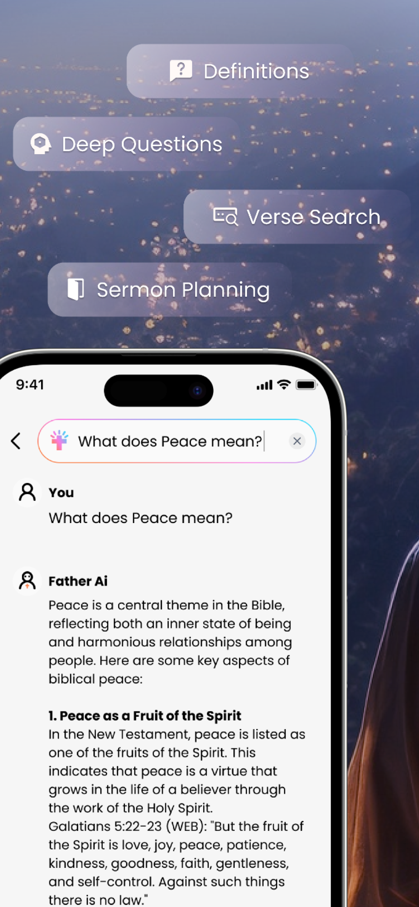
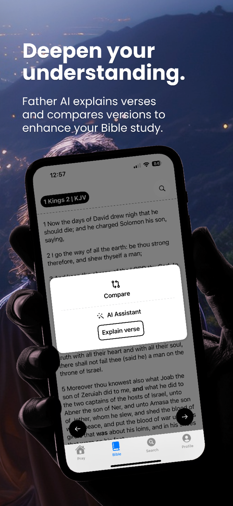
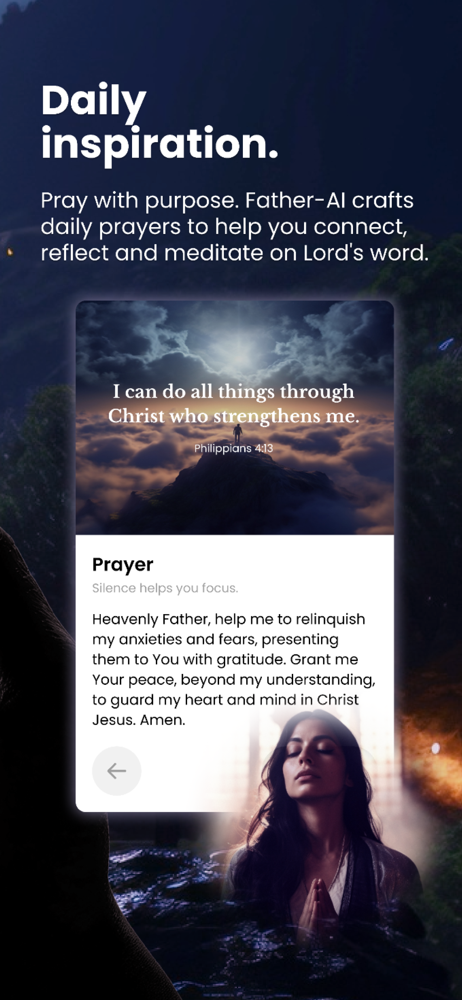

Bible Project: Guided by AI
Overview
In today's fast-paced world, finding time for spiritual reflection and connection can be challenging. The Bible Project redefines your journey, merging technology and spirituality to bring you closer to God's word through an AI-enhanced, personalized experience.
Bible Project Offers:
- AI-Enhanced Spiritual Journeys: Experience a devotional path uniquely tailored to your faith and spiritual needs.
- Visual and Textual Harmony: Enjoy a seamless blend of scripture and captivating visuals, making your study sessions more engaging and reflective.
- Accessibility for All: Access the richness of God's word anytime, anywhere, with content tailored to fit your life's rhythm.
Why Choose Bible Project?
Choosing the Bible Project means embracing a more enriched and purposeful spiritual life. It's more than an app; it's a movement towards deeper, more intimate connections with the divine, supported by cutting-edge AI technology.
Bridging the Gap:
- For the Busy Believer: No matter how hectic your schedule, the Bible Project ensures you never miss your daily dose of divine wisdom.
- For the Visual Learner: Engage with scripture through stunning visuals that bring God's message to life, making every lesson vivid and memorable.
- For the Spiritual Seeker: Explore the Bible through a personalized lens, encouraging growth and discovery at every step.
Transform your spiritual routine with the Bible Project. Download now and start your journey towards a more enlightened, personal faith experience with Father-AI by your side.
Key Features
- AI-Powered Keyword Search: Instantly find all Bible verses containing your chosen keywords with our advanced search feature.
- Semantic Understanding: Ask Father-AI any question, from simple definitions to deep theological reflections, and receive precise, insightful answers.
- Interactive Bible Study: Father-AI explains verse meanings and compares different versions to deepen your understanding as you read.
- Personalized Recommendations: Receive AI-curated book and Bible version suggestions to kickstart your spiritual reading.
- Thematic Exploration: Dive into AI-suggested topics like love and anxiety for a more focused study.
- Daily Inspirations: Be inspired by the verse of the day, accompanied by stunning AI-generated art.
- Guided Prayers: Engage in heartfelt prayers crafted by Father-AI, designed to draw you closer to God's presence.
- AI-Enhanced Spiritual Journeys: Experience a devotional path uniquely tailored to your faith and spiritual needs.
- Visual and Textual Harmony: Enjoy a seamless blend of scripture and captivating visuals, making your study sessions more engaging and reflective.
- Accessibility for All: Access the richness of God's word anytime, anywhere, with content tailored to fit your life's rhythm.
App Screenshots






App Store Links
- Google Play: Bible Project: Guided by AI
- App Store: Bible Project: Guided by AI 4+